公開資料と従来の配置図をもとに、AIの補助で制作した建築図解。北が上の模式図で、屋根の形状・建物の大きさ・植栽は実物を正確に再現したものではありません。
公開資料と従来の配置図をもとに、AIの補助で制作した建築図解。北が上の模式図で、屋根の形状・建物の大きさ・植栽は実物を正確に再現したものではありません。
ひとつの天守ではなく、つながる四棟
正面からは大天守に目を奪われますが、まわりには乾・東・西の小天守があります。その間をつなぐのが、イ・ロ・ハ・ニの渡櫓。「連立式」という名前を、屋根のつながりとして眺めてみると覚えやすくなります。
四つの天守の位置と階数＋ 詳しく見る− 閉じる
- 大天守 南東
- 外観5重 / 地上6階・地下1階
- 乾小天守 北西
- 外観3重 / 地上4階・地下1階
- 東小天守 北東
- 外観3重 / 地上3階・地下1階
- 西小天守 南西
- 外観3重 / 地上3階・地下2階
外から数える屋根の「重」と、内部の「階」は一致しません。階数は姫路市の指定文化財一覧の表記に合わせています。
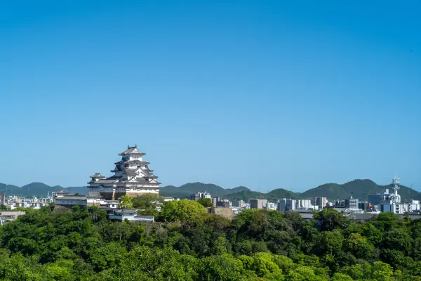
撮影：田路昌也第七景「男山高台 新緑の連立陣」へ
参考：姫路城公式「城の楽しみ方」、姫路市「市政の概要」指定文化財一覧（PDF）、姫路城公式ガイド p.43–46（PDF）
 公開資料と従来の構造図をもとに、AIの補助で制作した建築図解。赤が東西の大柱です。床・横架材との関係を示す模式図で、形状・寸法は簡略化しています。西大柱の3階部分の継ぎ目を簡略表示し、東大柱の根継ぎや細かな加工は省略しています。
公開資料と従来の構造図をもとに、AIの補助で制作した建築図解。赤が東西の大柱です。床・横架材との関係を示す模式図で、形状・寸法は簡略化しています。西大柱の3階部分の継ぎ目を簡略表示し、東大柱の根継ぎや細かな加工は省略しています。
柱だけでなく、横につなぐ材にも目を向ける
二本の大柱は、各階の横架材と結ばれています。太い柱そのものに加えて、横に延びる材がどう組み合わさるのかを見ると、外からは見えない木造の骨組みに気づきます。
西大柱の継ぎ目と、四つのまとまり＋ 詳しく見る− 閉じる
西大柱は3階部分で二本の材を継いでいます。一方、天守の構造は「地階〜2階」「3階」「4階」「5階〜6階」という四つのまとまりで捉えられ、大柱と横架材がそれらを結びます。
図では継ぎ目の位置を示しています。実際の継手の加工形状は省略しています。
現地で見る / 有料入口の手前
天守に入る前に、旧西大柱を見る
三の丸、有料入口の手前には、かつて天守を支えていた旧西大柱が展示されています。約350年にわたって使われ、昭和の大修理で取り替えられた柱です。今も天守の中に立つ柱とは別のものですが、横たわる長い材を目の前にすると、建物の中ではつかみにくい大きさが見えてきます。
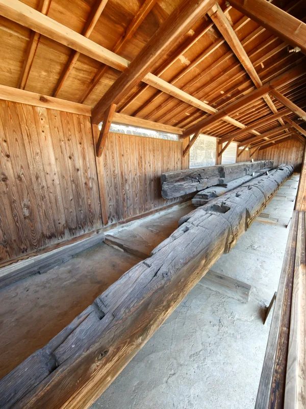
天守を支えていた柱を、地上で間近に見る。撮影：田路昌也 / 2026年3月17日
「上柱」と「下柱」で、一本の柱
旧西大柱は、下側の樅と上側の栂を、天守3階の床より上で継いだ柱でした。展示の札にある「上柱」「下柱」を見比べると、一本に見える大柱が、二本の木を組み合わせたものだったと分かります。
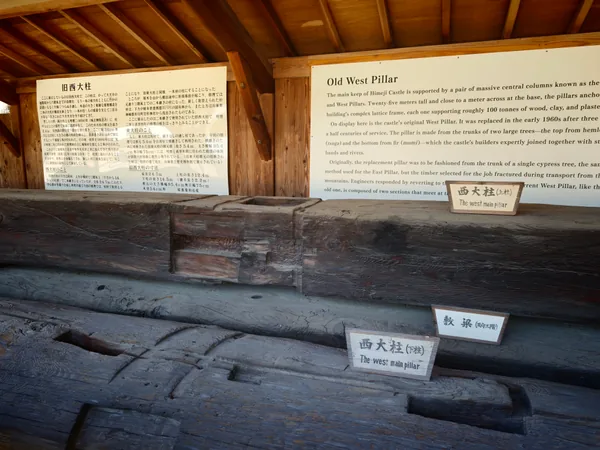
奥が上柱、手前が下柱。間の「敷梁」は別の部材です。写真は継ぎ合わせた状態ではなく、分けて展示された旧材を写しています。撮影：田路昌也 / 2026年3月17日
表面には、他の部材と組み合うための加工や、後の修理の跡も残っています。見える切り欠きのすべてが、上柱と下柱の継ぎ目というわけではありません。
東と西では、継いだ理由が違う
- 西大柱
- もともと上柱と下柱を継いだ柱。昭和の大修理で新しい檜材に取り替えられ、現在も3階部分で二本を継いでいます。
- 東大柱
- もとは継ぎ目のない一本の樅材。昭和の大修理で根元5.4mを台湾檜に替えて継ぎ直し、残りの材を引き続き使っています。
つまり、「西は二本継ぎ、東は一本材」だけでは、現在の姿を説明しきれません。東にも、傷んだ根元を新しい材につなぐ「根継ぎ」があります。柱の違いは、建てたときの工夫と、守り続けるための修理の両方を物語っています。
一本材になるはずだった、新しい西大柱＋ 詳しく見る− 閉じる
昭和の大修理（1956〜1964年）では、旧西大柱の内部に腐朽が見つかり、取り替えることになりました。新しい柱には、一本の長い檜を使う計画がありました。
ところが、選ばれた原木が山から運び出される途中で折れてしまいます。そこで、元の柱と同じように3階部分で二本の材を継ぐことに。現在の西大柱にも、修理を進めた人たちの試行錯誤が残っています。
参考：観光庁の解説「旧西大柱」。修理当時の継手の様子は、姫路城公式「昭和の大修理写真・大柱」でも見られます。
現地の説明板と、旧西大柱の寸法
説明板には、旧西大柱の上柱が12.4m、下柱が14.5m、継手の長さが2.2mと記されています。二本の長さをただ足すのではなく、重なる部分を差し引くと、全長24.7mになります。
ここでの24.7mは、展示されている旧西大柱の説明板の数値です。冒頭の構造図は、公式ガイドの大柱の説明にある24.6mを用いています。
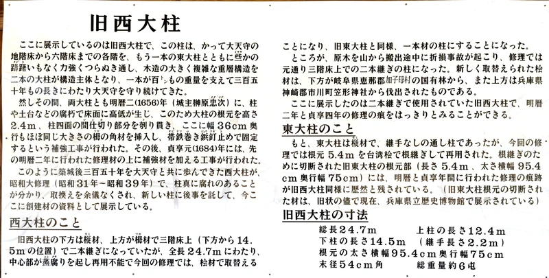
解説のもとになった現地説明板。東大柱の根継ぎについても記されています。撮影：田路昌也 / 2026年3月17日
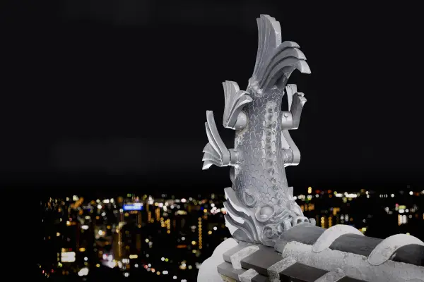
撮影：田路昌也 / 最上階からの眺め第二十八景「天守の窓辺 鯱瓦と夜景」へ
参考：現地「旧西大柱」説明板（2026年3月17日撮影）、観光庁「旧西大柱」、姫路城公式ガイド p.47「大通し柱構法」（PDF）、兵庫県立歴史博物館「姫路城」。展示場所の案内は撮影時点のものです。訪問時の公開状況は姫路城公式サイトと現地の案内をご確認ください。
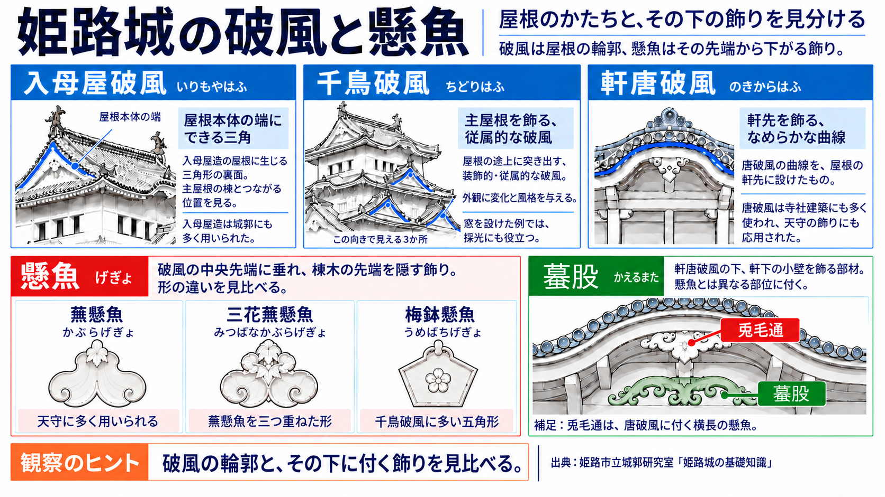
屋根の輪郭と、その下の飾りを見分ける。
三つの破風を見分ける
- 入母屋破風
- 入母屋造の屋根の端に現れる三角形。主屋根の棟につながる位置を見ると、千鳥破風との違いが分かります。
- 千鳥破風
- 屋根の途中に突き出す、装飾的・従属的な破風。主屋根にアクセントを添え、窓が設けられたものは採光にも役立ちます。
- 軒唐破風
- 唐破風のなめらかな曲線を、屋根の軒先に設けたもの。三角形の破風とは違う、柔らかな輪郭が目印です。
懸魚は、破風の下に垂れる飾り
破風の中央先端に垂れ、棟木の先端を隠すのが懸魚です。姫路城では、次の三つの形を見比べてみましょう。
- 蕪懸魚
- 天守に多く用いられる形。中央から下へ垂れる輪郭に注目します。
- 三花蕪懸魚
- 蕪懸魚を三つ重ねた形。左右にも広がる、複雑な輪郭が特徴です。
- 梅鉢懸魚
- 千鳥破風によく用いられる五角形の懸魚です。
写真で見る、破風の下に垂れる懸魚
三角形の破風の内側、頂点のすぐ下に白い懸魚が見えます。屋根全体の輪郭から中央の飾りへ目を移すと、図解で見た「付く位置」を実際の建物でも確かめられます。
 破風がつくる大きな三角と、その下の懸魚。白い飾りの輪郭や重なりを見比べる。撮影：田路昌也
破風がつくる大きな三角と、その下の懸魚。白い飾りの輪郭や重なりを見比べる。撮影：田路昌也
兎毛通と蟇股は、付く位置を見比べる＋ 詳しく見る− 閉じる
兎毛通は、唐破風に付く横長の懸魚です。一方、図で緑色に示した蟇股は、軒唐破風の下の小壁を飾る別の部材。形だけでなく、どこに付いているかも見分ける手がかりになります。
出典：姫路市立城郭研究室『姫路城の基礎知識』
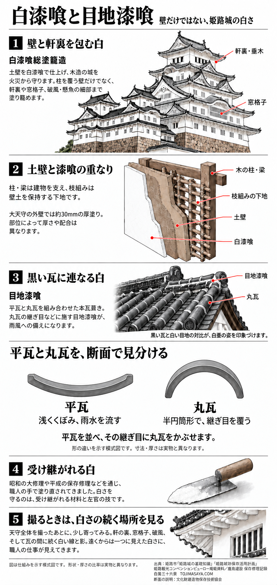
公開資料をもとにAIの補助で制作した模式図。形状や厚さの比率は実物と異なります。平瓦と丸瓦は、断面の違いも見比べてみてください。
壁から軒裏まで、木造の城を包む
白漆喰総塗籠造は、柱を覆う土壁だけでなく、軒裏や垂木、窓格子、破風・懸魚の細部まで漆喰で塗り籠める仕上げです。白い外観を生むとともに、木造の城を火災から守る役割があります。
建物を支えるのは木の柱と梁。枝組みなどの下地が壁土を保持し、その表面を白漆喰で仕上げます。図の断面は、骨組み・下地・土壁・仕上げ、それぞれの役割を分けて示しています。
黒い瓦の間にも、白が続く
姫路城の屋根は、平瓦と丸瓦を組み合わせた本瓦葺き。丸瓦の継ぎ目などに施す目地漆喰が、雨風への備えになります。黒い瓦と白い目地の対比も、姫路城の白い印象をつくっています。
- 平瓦
- 断面は浅くくぼんだ形。くぼみを上に向けて並べ、屋根の傾斜に沿って雨水を流します。
- 丸瓦
- 断面はアーチ状の半円筒形。隣り合う平瓦の継ぎ目を上から覆います。
屋根の盛り上がった筋だけを見ていると、二つを混同しがちです。平瓦は水を受けて流すくぼみ、丸瓦は継ぎ目にかぶせる覆い、と断面から見分けてみましょう。
写真で見る、瓦の間に続く白
丸瓦の継ぎ目をたどると、白い漆喰が帯のように連なっています。屋根全体に繰り返す白い線と、近くで見る漆喰の盛り上がり。同じ白さにも、距離を変えると違った表情が見えてきます。
 黒い瓦に繰り返す、白い目地漆喰。丸瓦の継ぎ目と、奥の棟にも白が続いています。撮影：田路昌也
黒い瓦に繰り返す、白い目地漆喰。丸瓦の継ぎ目と、奥の棟にも白が続いています。撮影：田路昌也
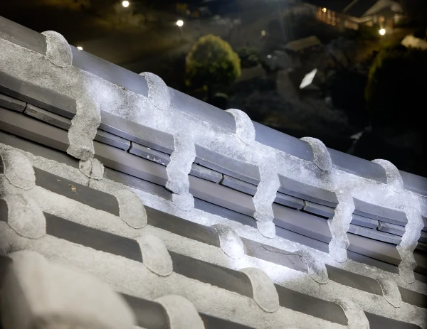
棟に重なる瓦と、漆喰の厚み。光が当たると、白い表面の凹凸まで見えてきます。撮影：田路昌也
漆喰の厚さと、受け継がれる修理＋ 詳しく見る− 閉じる
大天守の外壁では、漆喰を約30mmの厚さに塗ると紹介されています。ただし、城のどこも同じ厚さではなく、部位によって厚さや配合は異なります。
この白さは、完成したまま何百年も残っているわけではありません。昭和の大修理や平成の保存修理などを通じて、職人の手で塗り直されてきました。受け継がれる材料と左官の技が、今日の姿を支えています。
出典：姫路市立城郭研究室『姫路城の基礎知識』、姫路市『姫路城跡保存活用計画』（PDF）、姫路観光コンベンションビューロー・姫路城観覧資料、鹿島建設・姫路城の保存修理、文化財建造物保存技術協会・伝統技法
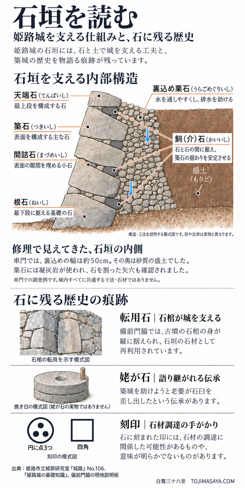
石垣を支える内部構造と、石に残る歴史。公開資料と現地説明板をもとにした模式図で、石の形・比率・配置を実測したものではありません。
大きな石だけで、立っているのではない
表面をつくる大きな石の間には、隙間を埋める小石や、据わりを調整する石があります。背後の栗石は水を通しやすくし、排水を助けます。表に見える石、その間の石、奥の石と土。それぞれの働きが、石垣を支えています。
断面図にある７つの部分＋ 詳しく見る− 閉じる
- 天端石
- 石垣の最上段を構成する石です。
- 築石（平石）
- 石垣の表面を構成する主な石です。
- 間詰石
- 表面の石どうしの隙間に詰める小石です。
- 飼（介）石かいいし
- 石と石の間に据え、築石の据わりを安定させる石です。図では、天端石から根石までの段の間に濃い灰色で示しています。
- 裏込め栗石
- 築石の背後に詰める石。水を通しやすくし、排水を助けます。
- 盛土
- 裏込めのさらに奥にある、積み上げられた土です。
- 根石
- 石垣の最下段に据える、基礎となる石です。
図中の飼（介）石の数や位置は、働きを説明するためのものです。すべての石垣で同じ間隔に入ることを示しているわけではありません。
修理で見えてきた、石垣の内側
車門の修理では、裏込めの幅が約50cmで、その奥が砂質の盛土になっていることが確認されました。築石には凝灰岩が使われ、石を割るための「矢穴」も見つかっています。外から眺めるだけでは分からない、石の選び方や積み方が、修理の記録には残されています。
姫路市立城郭研究室『城踏』No.106に紹介された車門の調査例です。裏込めの幅や石材が、城内のすべての石垣に共通するわけではありません。
写真で見る、大きな石と小さな石
現地では、まず表面の大きな石と、その隙間に入った小さな石を見比べてみる。天守を見上げて通り過ぎていた足元にも、異なる大きさの石を組み合わせた仕事が見えてきます。
 大きな石の輪郭と、隙間に詰められた小石を見る。背後の裏込めや、石の据わりを支える部分は、外観だけでは確かめられません。撮影：田路昌也
大きな石の輪郭と、隙間に詰められた小石を見る。背後の裏込めや、石の据わりを支える部分は、外観だけでは確かめられません。撮影：田路昌也
積み方を見比べる：石の加工と角の組み方＋ 詳しく見る− 閉じる
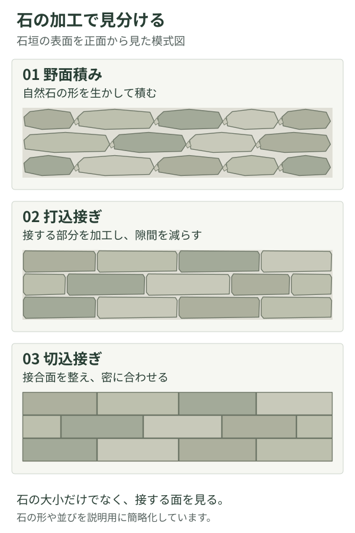
石材の加工の違いを示す模式図。実際の石の形や配列、隙間の大きさは場所によって異なります。
- 野面積み
- 自然石をほとんど加工せず、形を生かして組み合わせます。石の間には小さな石も詰められています。
- 打込接ぎ
- 石が接する部分を加工して、隙間を少なくしたもの。表面には石の自然な凹凸も残ります。
- 切込接ぎ
- 接合面を丁寧に整え、石どうしを密に合わせます。姫路城では三の丸の一部などに見られます。
角の積み方と、石垣の反りにも注目
長い石の向きを交互に変えて角を組むのが算木積み。石材の加工の分類とは別の、角を組む工夫です。備前丸西側などでは、上へ向かって立ち上がる「扇の勾配」も見どころになります。
石の大きさだけで時代を決めることはできません。積み直しや継ぎ足しも含め、場所ごとの違いを見比べてみましょう。
石垣になる前の、石の役目
備前門の入口脇には、古墳の石棺の身を転用した石が、縦に積まれています。説明を知らずに通れば、よく整えられた大きな石に見えるかもしれません。かつて埋葬に使われた石が、今は城を支えている。その由来を知ると、石垣の見え方も変わります。
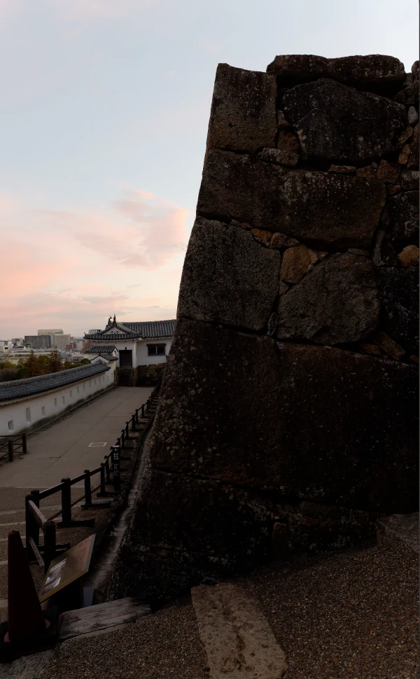
石棺を転用した石が残る、備前門脇の石垣。夕暮れの光の中で、その高さと石の重なりを見る。撮影：田路昌也 / 2026年3月
現地の説明板「石棺」＋ 詳しく見る− 閉じる
説明板では、備前門脇の石が石棺の「身」であることと、ほかの石垣にも組合式石棺の側石や底石が再利用されていることが紹介されています。石棺は、そのままの箱の姿で見えるとは限りません。
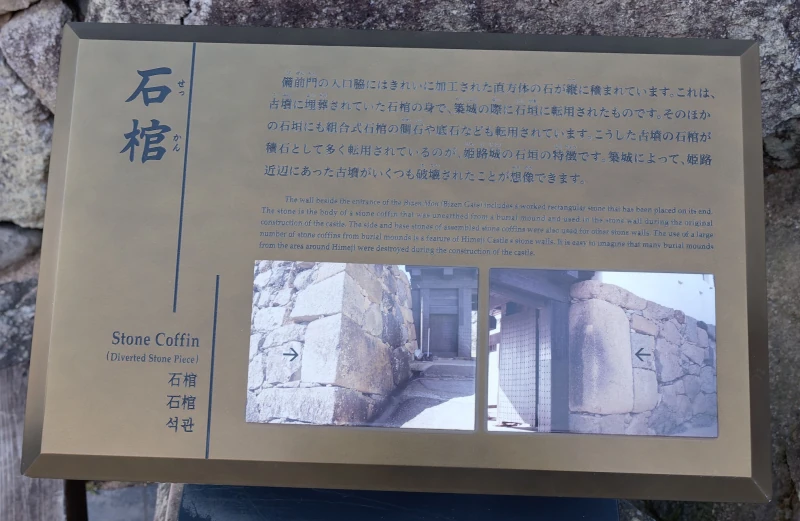
石棺の由来と位置を伝える現地説明板。説明：現地掲示 / 撮影：田路昌也
残る石と、語り継がれる物語
- 姥が石の伝承
- 老婆が築城を助けようと石臼を差し出した、という物語が伝わります。転用された石材の存在と、寄贈のいきさつを語る伝承は、分けて受け止めたいところです。
- 石に刻まれた印
- 刻印には石材の調達に関係した可能性があるものも、意味が明らかでないものもあります。図の「円に点３つ」や「四角」は模式図で、担当者や産地を一律に特定する印として示したものではありません。
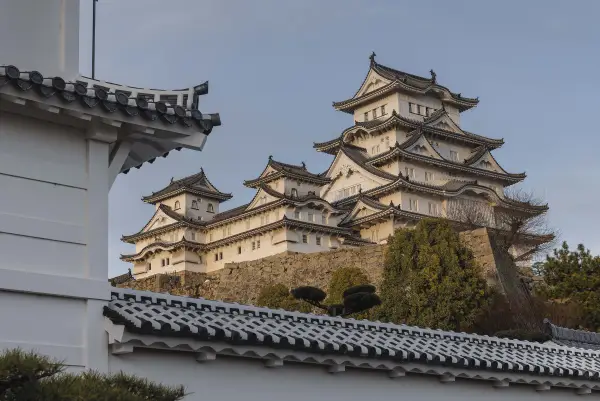
撮影：田路昌也第三十景「菱の門東方 石垣と瓦が縁取る夕景」へ
出典：姫路市立城郭研究室『城踏』No.106（PDF）、『姫路城の基礎知識』、観光庁「石垣」（PDF）、姫路市立城郭研究室「縄張り・普請」、兵庫県立歴史博物館「姫路城」、備前門脇の現地説明板「石棺」（写真は本章内に掲載）
 上段は外から見た形、下段は壁を上から見た断面の模式図。実物の寸法や配置は再現していません。 図をタップして拡大
上段は外から見た形、下段は壁を上から見た断面の模式図。実物の寸法や配置は再現していません。 図をタップして拡大